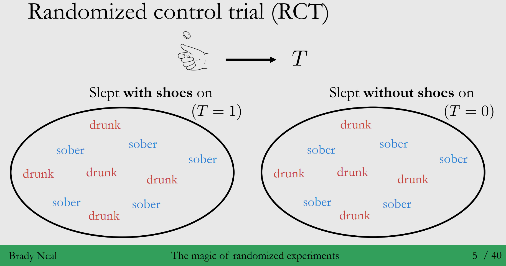
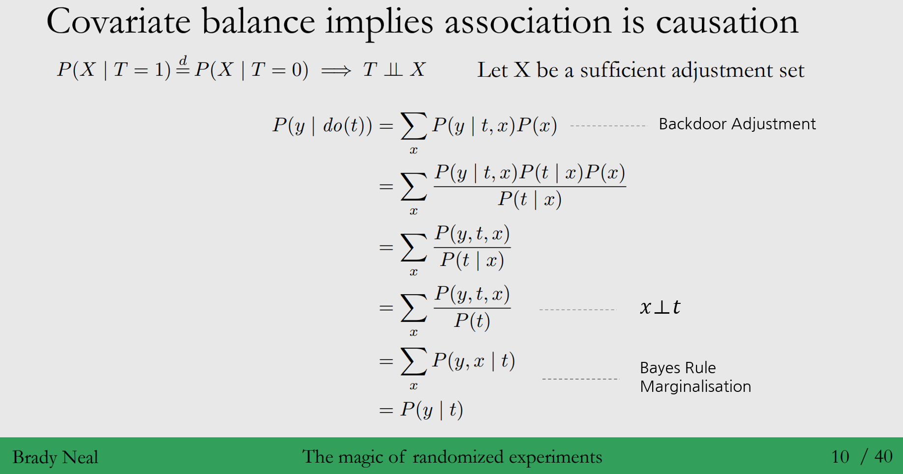
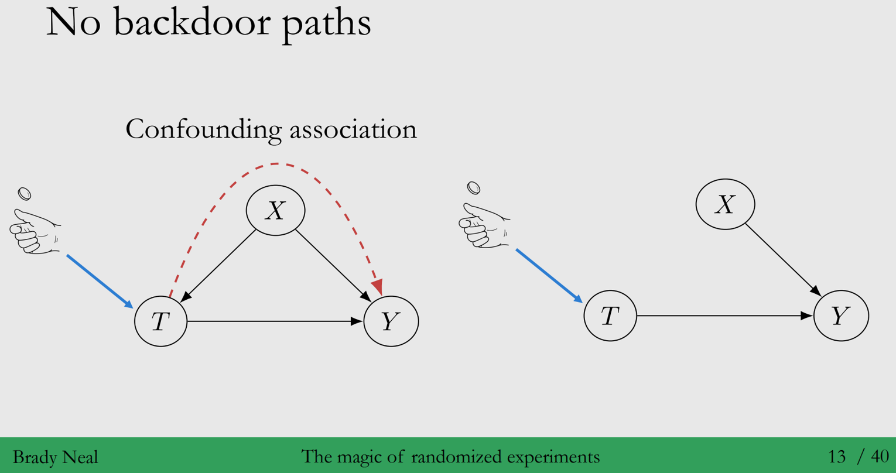
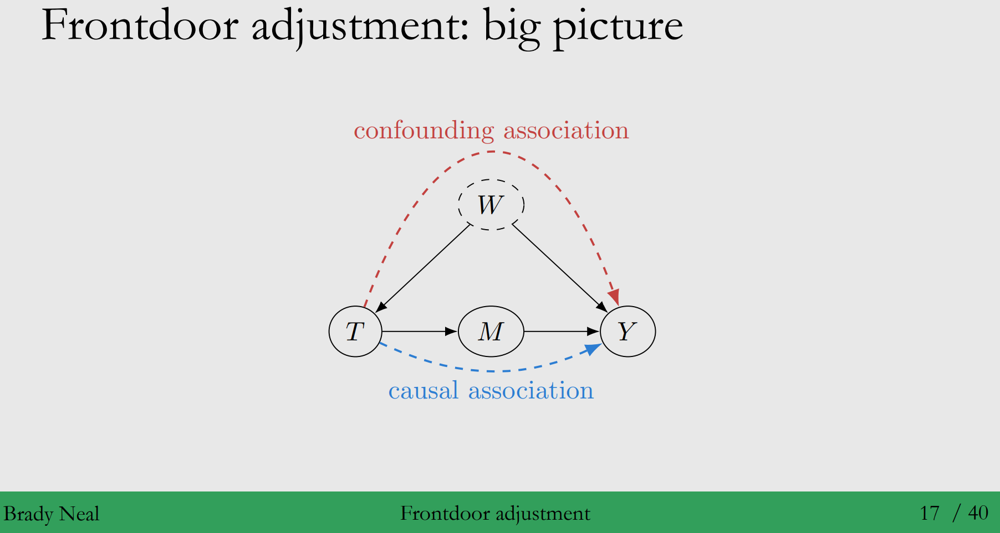
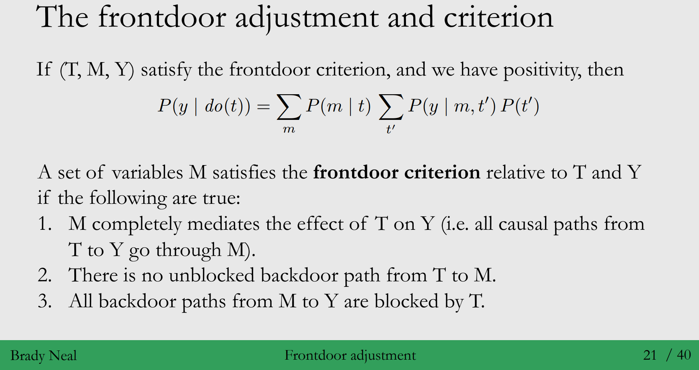

안녕하세요, 가짜연구소 Causal Inference 팀의 김소희입니다.
Introduction to Causal Inference 강의의 다섯 번째 챕터이며, 해당 챕터에서 다루는 내용은 아래와 같습니다.
Contents
- Randomized Experiments
- Frontdoor adjustment
◦ 강의 영상 링크 : Chapter 5 - Randomised Experiments
작성된 내용 중 개선점이나 잘못된 부분이 있다면 댓글로 알려주세요!
(1) Randomized Experiments
Randomized experiments are magic
- Observational study : 관측되지 않은 confounders의 존재가능성 때문에, unconfoundedness를 보장받거나 backdoor criterion가 존재하는지 알 수 없습니다.
- Randomized experiments : unobserved confounding의 가능성을 차단함으로써 unconfoundedness를 보장받고 backdoor criterion이 만족되는지 알 수 있게 됩니다.
⇒ Randomization은 Association is causation을 성립하게 만들어줍니다!
- Randomized Control Trial (RCT)
1. 2장에 나온 예시
◦ 변수 소개
- \(T\) (Treatment) : 신발을 신고 잔다
- \(Y\) (Outcome) : 다음 날 두통 여부
- \(X\) (Confounder) : 전날 밤 술에 취했는지 여부
◦ Observational study : 신발에 신고 자는 그룹(\(T=1\)) vs 벗고 자는 그룹(\(T=0\))의 그룹을 있는 그대로 나눕니다.
- 어떤 문제가 생길까요? Treatment / Control group간 비교 가능하지 않습니다!
⇒ 즉, 신발 신고 잔 그룹(\(T=1\)) 중, 전날 술에 취한 사람의 비율(confounding)이 신발 벗고 잔 그룹에 비해
훨씬 높은 것을 볼 수 있어요.
◦ Randomized experiment : 신발을 신고 잘지 벗고 잘지 여부를(treatment를) 동전 던지기로 결정합니다.
⇒ 동전 앞뒷면이 나올 확률이 같으므로, 신발 신은 그룹과 벗은 그룹 내 전날 술에 취한 사람의 비율이
거의 같아지게 됩니다.

- Randomized Experiments에 대한 3가지 관점
1. Comparability and Covariate balance
◦ 처치 여부에 대한 랜덤화 : 처치 집단과 통제 집단의 다른 모든 조건을 같게 만들고(confounders 분포를 포함),
딱 하나 처치 여부만 다르게 합니다.
→ 따라서 처치 집단과 통제 집단의 결과에 차이가 생길 경우 이를 처치 여부 때문이라고 할 수 있게 됩니다.
◦ 처치 여부를 랜덤화 하는 것은 unobserved covariates까지도 covariate balance를 갖게 하는 효과를 가집니다.
그렇기 때문에 \(T\)가 \(X\)에 의해 결정되지 않아요. (\(T{\perp \!\!\! \perp} X\))
\[P(X|T=1)\stackrel{d}{=}P(X) \quad and \quad P(X|T=0)\stackrel{d}{=}P(X)\]◦ Covariate balance : 처치 집단과 통제 집단에서 covariates \(X\)의 분포가 같음
\[P(X | T=1) \stackrel{d}{=} P(X|T=0)\]
→ “Covariate balance 이면, association is causation입니다”◦Covariate balance에 대한 부분을 \(P(y|do(t)) = P(y|t)\)을 통해 증명할 수 있는데요. 과정은 아래와 같습니다.

◦ Randomization ⇒ Covariate balance ⇒ “Association is causation”
2. Exchangeability
◦ Exchangeability 의미 : Treatment 여부에 따라 아래와 같은 성질이 달라지지 않습니다.
- 그룹의 구성
- 평균적 결과◦ Exchangeability의 형식적 정의와 “Association is causation”의 도출과정은 아래와 같아요 < textbook p.51 >
\[E[Y(0)|T=0] = E[Y(0)|T=1]\] \[E[Y(1)|T=1] = E[Y(1)|T=0]\]◦ Treatment/Control 그룹이 교환 가능 : 앞면이 나온 사람을 처치 집단에 넣기로 하든 뒷면이 나온 사람을
처치 집단에 넣기로 하든 각 그룹의 Y에 대한 기댓값은 같습니다.
3. No backdoor paths
◦ T를 randomize하면 T는 더이상 인과적 parents를 가지지 않게 됩니다.
- \(X\) → \(T\)로 가는 edge가 사라져서 backdoor path가 끊김
- Unobserved variables도 마찬가지로 path가 끊김

(2) Frontdoor Adjustment
- Backdoor adjustment를 다시 리마인드 해봅시다!
→ 왼쪽처럼 빨간색 점선(backdoor path)를 통한 non-causal association이 존재할 때,
\(W\_2\)와 \(C\)에 대해 각각 conditioning 함으로써 그 path를 차단할 수 있습니다.

- Frontdoor Adjustment 도입 배경 : Unobserved Confounders \(W\)
◦ Q : \(W\)는 unobserved confounder이므로 conditioning을 할 수 없는 경우가 생깁니다. 이 경우 backdoor path를 막을 수 없게 되는데요, 여전히 \(T → Y\)에 대한 casual effect를 identify 할 수 있을까요?
◦ A : “Frontdoor path”를 통해 가능합니다.

◦ 직관 :
- 아래 그림에서 Backdoor path는 \(T → W → Y\)의 Confounding association 입니다.
- 우리가 관심이 있는 Causal association이 \(M\)를 통하고 있습니다.
→ \(M\)에 집중하면, Causal association을 분리할 수 있습니다.

- Frontdoor Adjustment 3가지 Step
0. Frontdoor Adjustment 과정
◦ \(T → M\)에 대한 인과 효과 Identify
◦ \(M → Y\)에 대한 인과 효과 Identify
◦ 앞의 2개의 스텝을 합쳐서, \(T→ Y\)에 대한 인과 효과를 Identify
1. Frontdoor Adjustment : Step 1 < \(T → M\)에 대한 인과 효과 Identify >
◦ \(T → M\)으로 가는 path에는 \(Y\)가 \(T→W→Y→M path\)에서 collider로 backdoor path를 막고 있어요.
◦ 따라서 \(T → M\)으로 가는 association은 causal association만 존재하게 됩니다.
⇒ Empty set을 adjustment set으로 사용해, 아래와 같이 bacdkoor adjustment로 identify 가능합니다.
\[P(m|do(t)) = P(m|t)\]2. Frontdoor Adjustment : Step 2 < \(M → Y\)에 대한 인과 효과 Identify >
◦ \(M→ Y\)에 \(M→T→W→Y\)의 backdoorpath가 존재하지만, 여기서는 \(T\)에 대해 conditioning해서
backdoor path를 막을 수 있어요.
◦ Frontdoor adjustment는 backdoor adjustment를 응용한 버전이라고도 볼 수 있어요.
\[P(y|do(m)) = \sum_tP(y|m,t)P(t)\]
⇒ \(T\)를 sufficient adjustment set으로 사용해서 backdoor adjustment 적용할 수 있습니다.3. Frontdoor Adjustment : Step 3 < 앞의 2개의 스텝을 합쳐서, \(T→ Y\)에 대한 인과 효과를 Identify >
◦ \(T → Y\) 의 인과 효과 규명을 위해 step1, 2를 chaining 하게 되면 아래와 식과 같습니다.
\[P(y|do(t)) = \sum_mP(m|do(t))P(y|do(m))\]


- Frontdoor Adjustment Criterion
◦ 만약 (\(T\), \(M\), \(Y\))가 frontdoor criterion를 만족시키고, positivity를 가정한 경우, step1과 step2의 공식을
step3와 합친식은 아래와 같습니다.
\[ P(y | do(t)) = \sum_mP(m|t)\sum_{t'}P(y|m, t')P(t') \]◦ 변수 세트 \(M\)은 \(T\)와 \(Y\)에 관해, 다음 조건들이 참이면 frontdoor criterion을 만족시킨다고 할 수 있어요.
- \(M\)이 \(T → Y\)의 효과를 완전하게 매개
(complete mediation, 예시 : 모든 \(T\)에서 \(Y\)로 가는 causal path가 \(M\)을 지나는 경우)
- \(T\)에서 \(M\)으로 가는 unblocked backdoor path가 없음
- \(M\)에서 \(Y\)로 가는 모든 backdoor path가 \(T\)에 의해서 blocked
To be continued) 다음은 Nonparametric Identification 에 대해 배울 예정입니다.